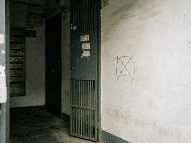

今天下班回家的时候，我突然发现自家大门墙壁上出现了一个奇怪的用马克笔做的标记。 （已拍照留存，见图1） 之前在网上看过科普，这很可能是踩点小偷留下的“记号”，用来标记家里是否有人、是否容易下手等。细思极恐！😰 请大家今天回家时，务必仔细检查一下自家门口、电表箱、消防通道是否有类似的奇怪符号、小广告或异物！如果有，请立刻拍照并清理，同时告知物业！

文件已攻击 文件已攻击 文件已攻击 文件已攻击 文件已攻击 文件已攻击 文件已攻击 文件已攻击 文件已攻击 文件已攻击 文件已攻击 文件已攻击 文件已攻击 文件已攻击 文件已攻击 文件已攻击 文件已攻击 文件已攻击 文件已攻击 文件已攻击 文件已攻击 文件已攻击 文件已攻击 文件已攻击 哈哈哈哈哈哈哈哈哈哈哈哈哈哈哈哈哈哈哈哈哈哈哈哈哈哈哈哈哈哈哈哈哈哈哈哈哈哈哈哈哈哈哈哈哈哈哈哈哈哈哈哈哈哈哈哈哈哈哈哈哈哈哈哈哈哈哈哈哈